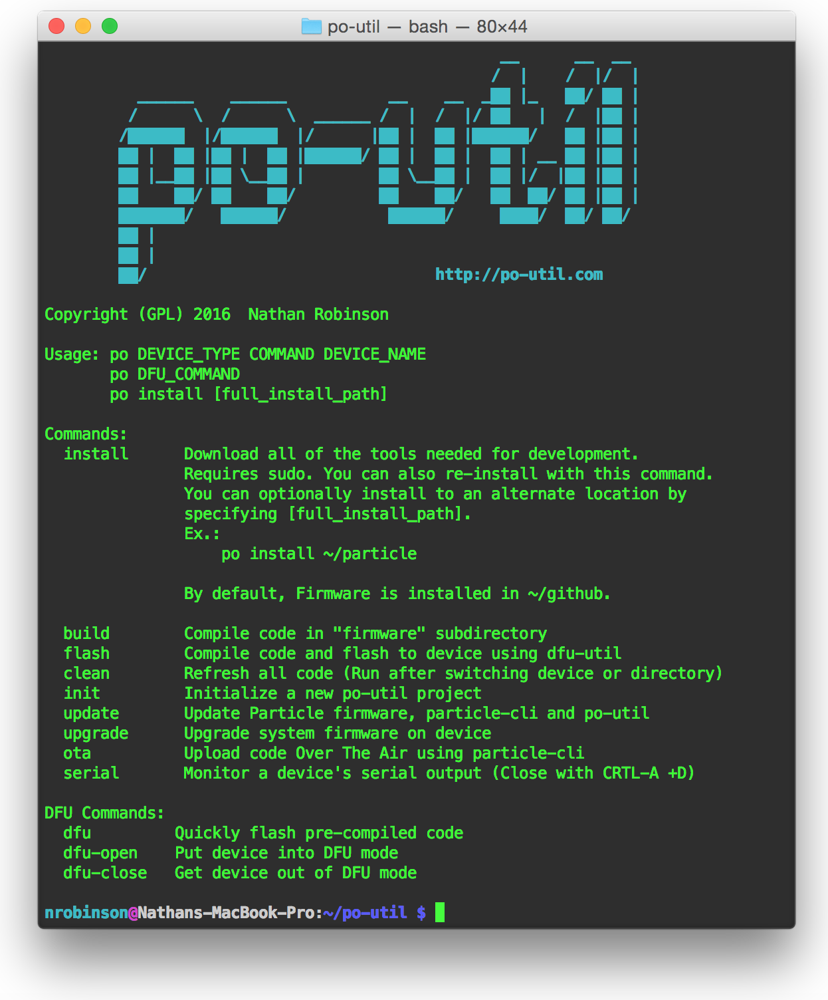

Particle Offline Utility:
A handy script for installing and using the Particle Toolchain on Ubuntu-based distros and OSX. This script downloads and installs: dfu-util, nodejs, gcc-arm-embedded, particle-cli, and the Particle Firmware source code.
Manual Install / Update
You can get a copy of po-util at the Github repository. The easiest way is to download po-util.sh from this link and run:
./po-util.sh install
To setup po-util and install dependencies.
Alternatively, you can clone po-util with git:
git clone https://github.com/nrobinson2000/po-util
cd po-util
./po-util.sh install
When installing po-util, an alias is added to your .bashrc that allows you to run po from anywhere to use po-util.
Quick Install / Update
curl po-util.com/download | bash
Copy and paste this into your terminal.
Note: We download everything from well known locations and Github. While we believe this is a reasonable method as a quick start, it's always a good idea to know what is going on under the hood. The install script can be found on GitHub if you want to manually download and run it.
Tips
The three most useful commands are build, flash and clean. Build compiles code in a "firmware" subdirectory and saves it as a .bin file in a "bin" subdirectory. Flash does the same, but uploads the compiled .bin to your device using dfu-util. Clean refreshes the Particle firmware source code.
A po-util project must be arranged like so:
po-util_project/
└ firmware/
└ main.cpp
└ lib.cpp
└ lib.hSince po-util compiles .cpp and not .ino files, #include "application.h" must be present in your main.cpp file.
A blank main.cpp would look like:
#include "application.h"
void setup()
{
}
void loop()
{
}
One of the features of po-util is that it changes the baud rate to trigger dfu mode on Particle devices from 14400 to 19200. The reason for this is because Linux can not easily use 14400 as a baud rate. To enable this feature, connect your device and put it into DFU mode, and type:
po DEVICE_TYPE patch
# Replace DEVICE_TYPE with either "photon" or "electron"Why I created this script
I created this script because Particle does not currently have a script for easily installing the Particle Toolchain and depedencies on Linux and OSX. I created this script in order to help out other Particle users and to improve my bash scripting skills. It would be my dream come true if Particle added this script to its resources or gave it a shoutout in its documentation. If that happened, I would feel very proud of myself for making a meaningful contribution.